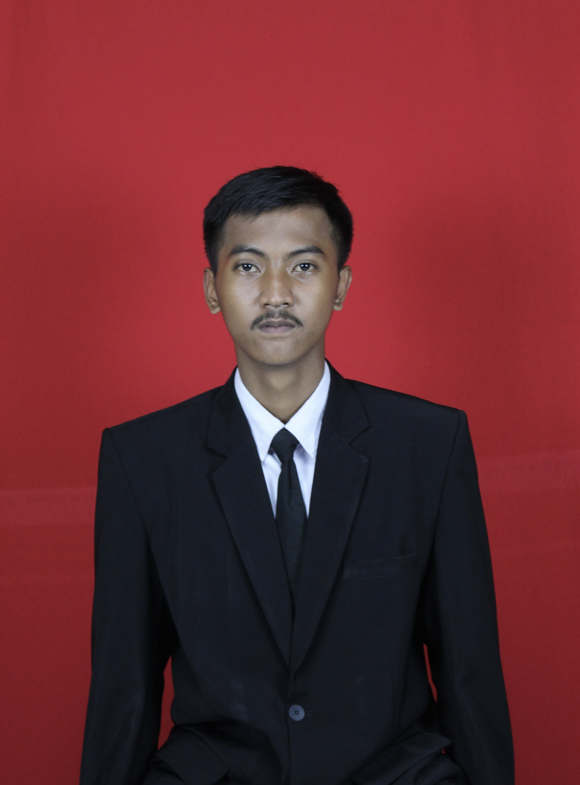
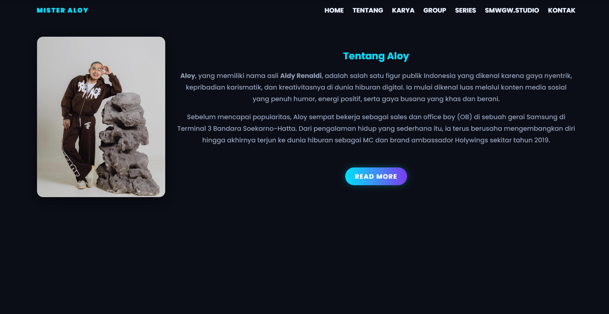
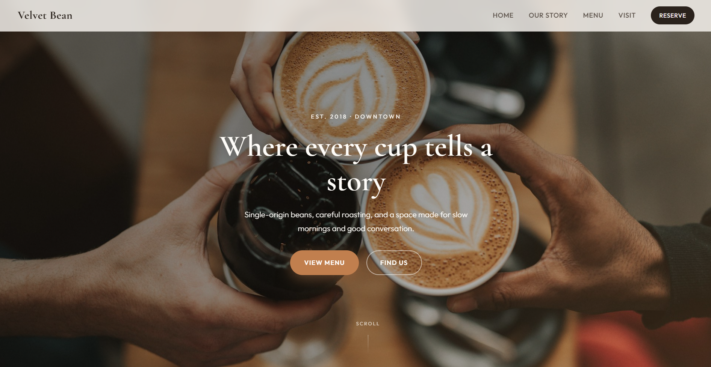
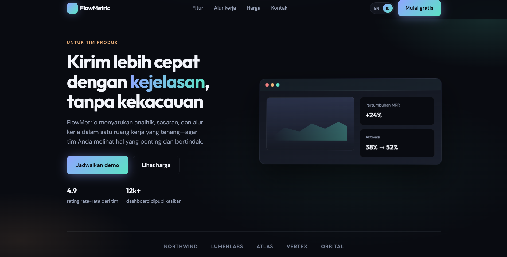

HTML
Semantic structure, accessibility, and meaningful markup.
Hello, I'm
Designer & developer crafting thoughtful digital experiences. I build modern landing pages that help businesses grow and convert more users.

I am a Front-End Developer specializing in building modern, responsive, and high-converting landing pages using HTML and CSS. I focus on clean design, smooth user experience, and fast performance to help businesses and individuals grow their online presence. I am experienced in creating visually appealing websites with attention to detail, ensuring that every project looks professional on all devices. I am passionate about turning ideas into functional and attractive web interfaces.
Saya adalah Front-End Developer yang berfokus pada pembuatan landing page modern, responsif, dan efektif menggunakan HTML dan CSS. Saya mengutamakan desain bersih, pengalaman pengguna yang mulus, dan performa cepat untuk membantu bisnis dan individu memperkuat kehadiran online mereka. Saya berpengalaman membuat situs yang menarik secara visual dengan perhatian pada detail, agar setiap proyek tampil profesional di semua perangkat. Saya senang mengubah ide menjadi antarmuka web yang fungsional dan menarik.
Core technologies I use to build for the web.
Semantic structure, accessibility, and meaningful markup.
Layout, responsive design, motion, and visual polish.
Interactivity, behavior, and dynamic user experiences.

Personal branding website designed to showcase a digital creator with a modern and professional look. The design emphasizes clarity, strong visual storytelling, and smooth user experience, making it ideal for influencers, artists, and public figures. Fully responsive and optimized for performance using clean HTML & CSS.
Website personal branding yang dirancang untuk menampilkan kreator digital dengan tampilan modern dan profesional. Desainnya menekankan kejelasan, penceritaan visual yang kuat, dan pengalaman pengguna yang lancar, menjadikannya ideal untuk influencer, artis, dan tokoh publik. Sepenuhnya responsif dan dioptimalkan untuk kinerja menggunakan HTML & CSS yang bersih.

A modern and responsive coffee shop website designed with clean UI, elegant typography, and smooth user experience.
Sebuah situs web kedai kopi modern dan responsif yang dirancang dengan UI yang bersih, tipografi yang elegan, dan pengalaman pengguna yang lancar.

Landing page SaaS modern yang dirancang untuk mengubah pengunjung menjadi pengguna melalui UI yang bersih, pesan yang jelas, dan ajakan bertindak yang kuat. Tata letaknya berfokus pada kesederhanaan, kinerja, dan pengalaman pengguna, menjadikannya ideal untuk startup, produk digital, dan layanan online. Sepenuhnya responsif dan dibangun dengan HTML & CSS yang bersih untuk memastikan pemuatan cepat dan interaksi yang lancar di semua perangkat.
Open to collaborations and available for freelance work. Say hello.